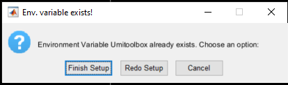
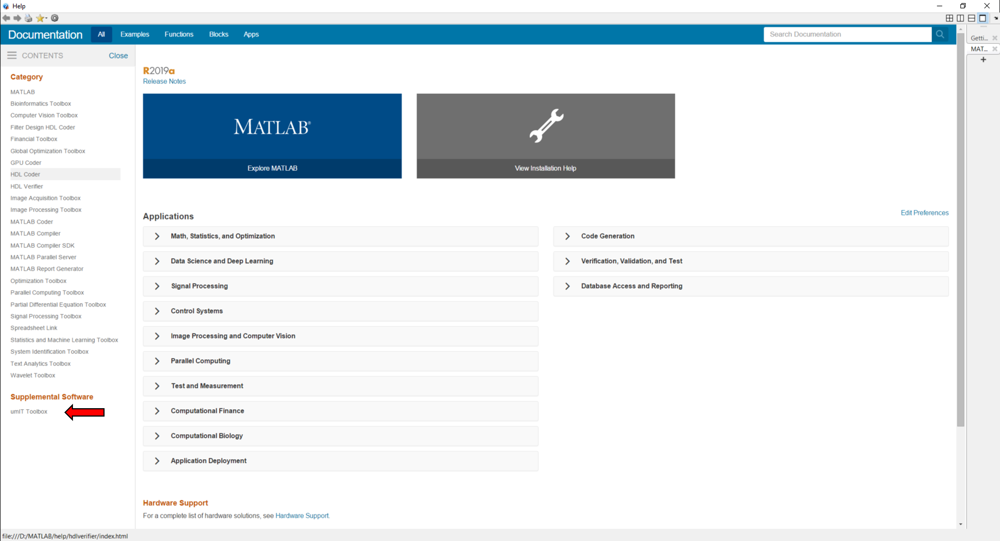

Here is the step by step setup procedure to start using the toolbox. Also, please check the recommended hardware and software here!
First, download the most recent versions of umIT and IOI_ana library from the following master repositories:
Next, extract the umIT files and folders to a local folder in your computer.
Note
It is advisable to place the toolbox in a folder that is accessible for all users of the Toolbox in order to avoid duplicate files in your computer!
Once all umIT files are extracted to a local folder, extract the content of IOI_ana library inside the umIT folder as:
C:/../umIT/IOI_ana/
You will need to create custom environment variable that will point to the umIT folder. This step is necessary for the toolbox to locate the analysis function folders and to add the documentation to Matlab's interface.
The variable name is Umitoolbox and the value is the path to the toolbox folder: C:/../umIT.
There are different ways to create an environment variable depending on the operating system. Here are some information on how to create an environment variable on Windows, MacOS and Linux. If you are using Windows, you can use the function Umitoolbox_setupEnv.m to automatically create the Umitoolbox environment variable for the current user account. Here is the procedure to create the environment variable using umIT's setup function:
Umitoolbox_setupEnv
done!
Restart MATLAB to apply the changes and rerun this function!
Once the Umitoolbox environment variable is created, run the function Umitoolbox_setupEnv. A dialog box will appear showing that the env. variable was detected. Click on Finish Setup button to conclude the setup process:
Now, the toolbox is ready to use and the toolbox documentation is accessible through Matlab's interface. To read the documentation, type in the command window:
doc
The link for umIT's documentation is located under "Supplemental Software" on the bottom-left side of the window:
